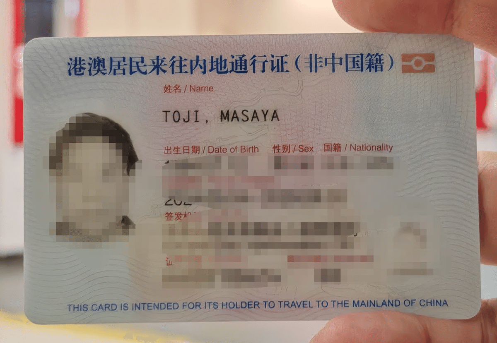
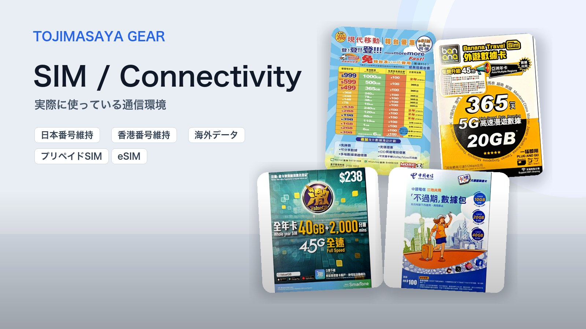
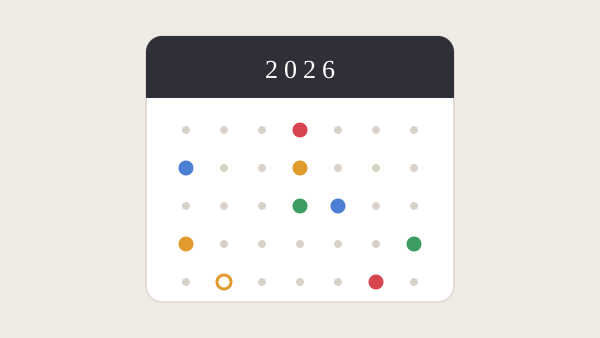

香港に30年暮らすなかで通ってきた、手続きとお金の実務記録です。旅行記のように時間が止まった記録ではなく、制度とともに変わっていく話なので、各ページに初出日を明記しています。撮影スポットやカメラ散歩は香港（撮影）ページへ。

回郷証・中国入国
非中国籍・香港永住者の回郷証 — 取得から中国入国まで 2024.08–11 初出 / 全6章を1ページで通し読み 制度開始申請・遅延初入国とe道登録ビザ免除の動き 通しで読む →
SIM・電話番号
SIM / Connectivity — 通信環境のまとめ 随時更新 / Gearページの詳細まとめへ 日本SIMの維持ローミング香港番号プリペイドSIM まとめを開く →
祝日・営業日
香港・中国・台湾・日本＋米国市場 祝日カレンダー 2026・2027 4地域＋米国市場を重ねて表示 / 中国の振替出勤日・米国の短縮取引日も収録 春節のずれ国慶節米国休場日 カレンダーを見る →
口岸・越境
旺角から深圳へ — 越境バスと口岸の実践ガイド 2026年7月時点 / 皇崗・福田・DJI旗艦店・華強北 越境バスe道は顔だけ離境退税 ルートを見る →銀行・送金
口座・送金まわりで実際に起きたことの記録です。関心のある項目からどうぞ。事例はこれからも増えていきます。
- 2024.11HSBC Premierとの付き合い方100万ドルの珈琲の代償と、再発見したメリット（全2篇）
- 2024.12香港の賢い送金術PayMe・FPS・バーチャルバンクの活用法
- 2024.12香港HSBCの外貨引き出しサービスの変遷と2025年2月の限度額改定（全2篇）
- 2025.09HSBC「Payment Connect」で中国本土に即時送金してみた
- 2025.10HSBCシンガポール口座、2年放置でドーマント化 — その復活劇
- 2025.12新しくDBS銀行で口座をつくった理由HSBC・Citiとの付き合いを振り返りながら
- 2024.11中国工商銀行の休眠口座を解決してみた
- 2025.01中国の銀行口座のパスポート情報更新 — 深セン体験記
初出はすべてnote。体験の記録として、本サイトに整理して収録しています。